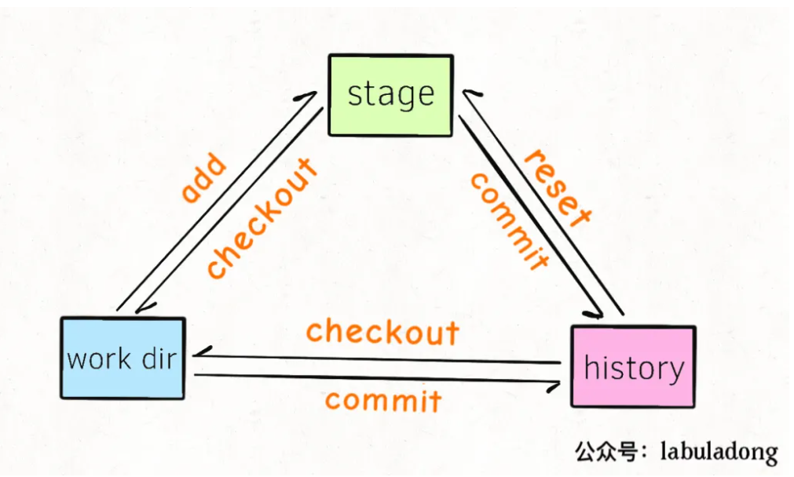
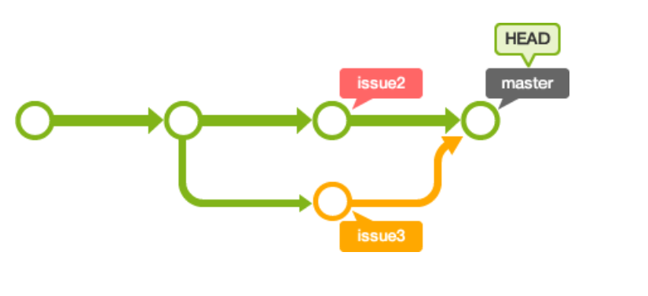

分区
本地 Git 的三个分区分别是：working directory, stage/index area, commit history
working directory是工作目录，也就是我们肉眼能够看到的文件在
work dir中执行git add相关命令后，就会把work dir中的修改添加到暂存区stage area（也叫index area）当
stage中存在修改时，我们使用git commit相关命令之后，就会把stage中的修改保存到提交历史commit history中，也就是HEAD指针指向的位置。任何修改只要进入
commit history，基本可以认为永远不会丢失了。每个commit都有一个唯一的Hash值，我们经常说的HEAD或者master分支，都可以理解为一个指向某个commit的指针 。work dir和stage区域的状态，可以通过命令
git status来查看，history区域的提交历史可以通过git log命令来查看。

移动
把work dir中的修改加入stage。
使用 git add
把stage中的修改还原到work dir中
即用stage中的文件来还原当前work dir的文件, 使用git checkout $file命令
$ touch a.txt
$ git add .
$ git status
On branch master
Changes to be committed:
new file: a.txt
$ git checkout a.txt
Updated 1 path from the index
注意, 在work dir做出的「修改」会被stage覆盖，无法恢复。所以使用该命令你应该确定work dir中的修改可以抛弃。
将stage区的文件添加到history区
使用 git commit
会将stage区的修改加入history区并分配一个 Hash 值。只要不乱动本地的.git文件夹，进入history的修改就永远不会丢失。
将history区的文件还原到stage区。
使用 git reset 命令, 实际是恢复到commit过去某个hash值时候的样子
git reset --mixed HEAD a.txt
回退指针到某个版本
git reset --hard 40a9a83 这不改变work dir中的任何数据，将stage区域中的a.txt文件还原成HEAD指向的commit history中的样子。就相当于把对a.txt的修改从stage区撤销，但依然保存在work dir中，变为unstage的状态。
- 不会改变work dir中的数据，会改变stage区的数据，所以应确保stage中被改动数据是可以抛弃的。
将work dir的修改提交到history区。
先git add然后git commit就行了，或者一个快捷方法是使用命令git commit -a。
将history区的历史提交还原到work dir中。
$ git checkout HEAD .
Updated 12 paths from d480c4fwork dir和stage中所有的「修改」都会被撤销，恢复成HEAD指向的那个history commit。
- 这个操作会将指定文件在work dir的数据恢复成指定commit的样子，且会删除该文件在stage中的数据，都无法恢复，所以应该慎重使用。
历史
git log可以显示所有提交过的版本信息
git reflog是显示所有的操作记录, git reflog常用于恢复本地的错误操作。
分支和冲突
分支
- 创建分支
git branch (branchname)
git checkout -b- 切换分支
git checkout (branchname)- 列出分支
git branch
git branch -a- 删除分支
```git branch -d (branchname)`
- 合并分支
合并到当前分支
git merge (branchname)冲突
- 远程更新到本地
git fetch：这将更新git remote 中所有的远程仓库所包含分支的最新commit-id, 将其记录到.git/FETCH_HEAD文件中
git fetch origin master:temp
// 本地新建temp分支，并将远程origin master分支到temp分支中
git merge temp
// 将temp分支合并到当前分支
git pull是git fetch和git merge两个步骤的结合。
git pull origin master : master- 合并冲突

冲突的文件在工作区修改, commit到提交区就可以了。这样master的HEAD就移动
$ git add myfile.txt
$ git commit -m "合并issue3分支"
# On branch master
nothing to commit (working directory clean)commit指针
git commit可以认为是一个有向无环图
HEAD指针指向commit id，HEAD所在的commit就是目前本地仓库的状态。
我们提交commit则是增加节点，同时HEAD指针后移每个节点代表一个commit, 有固定hash表示, 因此查看历史只需要找到对应节点commit的hash进行reset即可。
commit之后不可修改, 也就是只能增加commit节点, 不能删除commit节点。
参考 https://git-scm.com/book/zh/v2
子模块
- clone子模块
git clone --recursive [address]- 子模块初始化
git submodule update --init --recursive